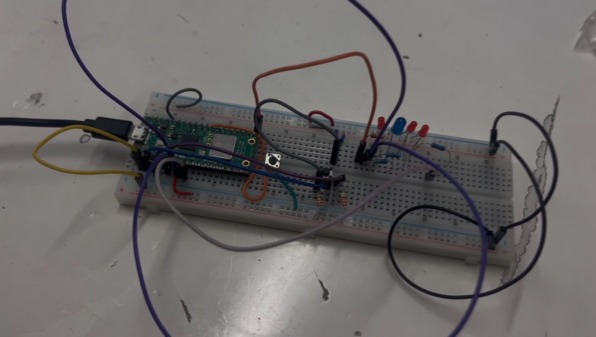

Session 6 - GPIO Interrupt Modes: Edge and Level Triggering
Goal: Understand and verify the four hardware GPIO interrupt trigger modes on the Raspberry Pi Pico 2 (GPIO_IRQ_EDGE_RISE, GPIO_IRQ_EDGE_FALL, GPIO_IRQ_LEVEL_HIGH, and GPIO_IRQ_LEVEL_LOW) by using a single pushbutton to toggle an LED through an Interrupt Service Routine (ISR).
Prediction: Interrupt behavior will depend directly on the electrical pull configuration paired with the chosen trigger mode. With an external pull-up resistor (active-low button), a falling edge occurs upon pressing the button and a rising edge occurs upon releasing it. In level-triggered modes, the ISR will fire continuously as long as the pin remains held at the target logic state (HIGH while unpressed, LOW while pressed), whereas edge-triggered modes will execute once per state transition.
Setup
- Pin map:
- Input: Pushbutton =
GP16(configured with an external 10 Ω pull-up resistor tied to 3.3 V; pressing connects the pin to GND). - Output: Status LED =
GP15(connected to GND through a current-limiting resistor). -
Common ground shared between the Pico 2 GND rail and the breadboard bus.
-
Photo:

-
Non-default: Internal pull resistors were explicitly disabled in software (
gpio_disable_pulls(BTN_PIN)) to prevent conflict with the external 10 Ω hardware pull-up network.
What we did
- Wired the LED to
GP15as an output and the pushbutton toGP16as an input, adding an external 10 Ω pull-up resistor to 3.3 V and disabling internal pulls viagpio_disable_pulls(). - Registered a single Interrupt Service Routine (
button_isr) usinggpio_set_irq_enabled_with_callback()to toggle the LED state viagpio_xor_mask(1u << LED_PIN)without blocking the mainwhileloop (tight_loop_contents()). - Tested all four interrupt configurations sequentially by updating both the trigger mask in
gpio_set_irq_enabled_with_callback()and the event validation bitmask insidebutton_isr(). - Compiled and flashed each variation using the
Runbutton in VS Code, observing the LED response upon pressing, holding, and releasing the button.
Evidence
Edge-Triggered Modes (EDGE_RISE & EDGE_FALL)
Figure 1: Demonstration of LED toggling on button release (EDGE_RISE) with an external pull-up.
Figure 2: Demonstration of LED toggling on button press (EDGE_FALL) with an external pull-up.
Level-Triggered Modes (LEVEL_HIGH & LEVEL_LOW)
Figure 3: Demonstration of continuous ISR execution while the input remains asserted in LEVEL_HIGH and LEVEL_LOW configurations.
Predicted vs measured
| Interrupt Mode | Trigger Condition (External Pull-Up) | Predicted LED Behavior | Observed Behavior | Status |
|---|---|---|---|---|
GPIO_IRQ_EDGE_RISE |
Button release (0 to 1) |
Toggles state once upon releasing button | Toggled cleanly on release | Verified |
GPIO_IRQ_EDGE_FALL |
Button press (1 to 0) |
Toggles state once upon pressing button | Toggled cleanly on press | Verified |
GPIO_IRQ_LEVEL_HIGH |
Button idle / unpressed (1) |
Continuous rapid toggling while unpressed | Dim/flickering glow while idle; freezes when pressed | Verified |
GPIO_IRQ_LEVEL_LOW |
Button held / pressed (0) |
Continuous rapid toggling while pressed | Off while idle; rapid toggling while held down | Verified |
What went wrong
- Nothing went wrong during this practice; the hardware pull-up network provided clean logic levels and all four interrupt modes executed as predicted without requiring extra debugging.
Code
// Essential logic: ISR callback with XOR toggle and IRQ event configuration
#define LED_PIN 15
#define BTN_PIN 16
// Swap mask across tests: GPIO_IRQ_EDGE_RISE, GPIO_IRQ_EDGE_FALL,
// GPIO_IRQ_LEVEL_HIGH, or GPIO_IRQ_LEVEL_LOW
#define IRQ_MODE GPIO_IRQ_EDGE_RISE
static void button_isr(uint gpio, uint32_t events) {
if (gpio == BTN_PIN && (events & IRQ_MODE)) {
gpio_xor_mask(1u << LED_PIN);
}
gpio_acknowledge_irq(gpio, events);
}
int main(void) {
gpio_init(LED_PIN);
gpio_set_dir(LED_PIN, GPIO_OUT);
gpio_init(BTN_PIN);
gpio_set_dir(BTN_PIN, GPIO_IN);
gpio_disable_pulls(BTN_PIN);
gpio_set_irq_enabled_with_callback(BTN_PIN, IRQ_MODE, true, &button_isr);
while (true) {
tight_loop_contents();
}
}
Open question
Since level-triggered interrupts fire continuously while the pin stays in the active state, how can we prevent the ISR from monopolizing the CPU without disabling the interrupt permanently?